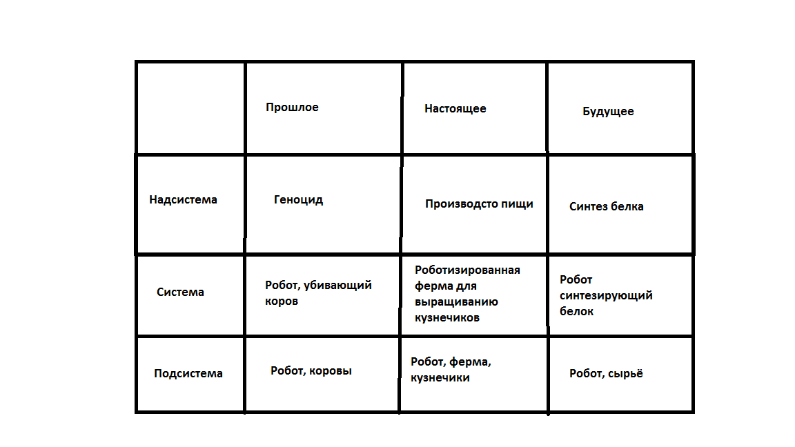

Ферма по выращиванию кузнечиков
Меня не устраивала проблема изменения климата,
поэтому я создал роботизированную ферму по выращиванию кузнечиков,
которая поможет решить множество проблем
Как это будет работать?
Специальный робот будет ездить от контейнера со сверчками к контейнеру,
если у сверчков закончился корм, то робот его положит.
Когда появятся личинки сверчков, то он их перенесёт в пустой контейнер,
Созревших кузнечиков робот может доставить в морозильную камеру.
Пока что мой проект - это прототип, и если что-то не работает, то в будущем я это исправлю.
Также я сделал таблицу возможного развития моего проекта.

План моего проета:
Конструирование и программирование омни-платформы
- Создание самой платформы на Lego, а в будущем на RaspberryPi
- Создание алгоритмов движения
- Создание связи между роботом и компьютером
Написание программы
- Написание логики
- Создание интерфейса
Моделирование фермы
- Изучение технологии выращивания сверчков или других насекомых
- Создание фермы
- Расположение сенсоров на ней
- Автоматизация фермы
Телемеханика
- Настройка машинного зрения с помощью OpenCV
- Установка камеры
- Настройка передачи данных с помощью MQTT